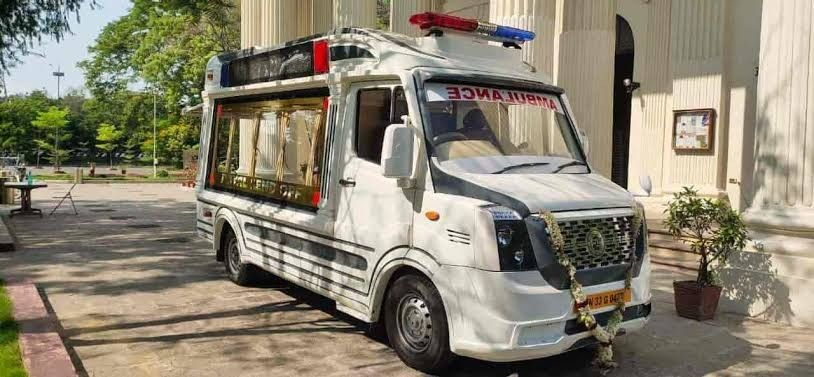

Hearse Infrastructure.
Built for Scale.
Custom-built hearse vehicles, institutional fleet solutions and funeral transportation infrastructure designed for hospitals, funeral operators, municipalities and care organizations.
Enabling Dignified. Reliable. Professional. Every Time.
Trusted by leading institutions across India
24x7
Coordination-ready service approach
8+
Transportation and fleet solution types
B2B
Built for institutional partnerships
Pan-India
Designed for city-wise expansion
Our Services
End to End Funeral Transportation Services
Structured, reliable and dignity-led mobility support for different institutional needs.
Hospital-to-Home Transfers
Hospital-to-Crematorium
Intercity Funeral Transport
Premium Funeral Mobility
Custom Fleet Solutions
The Infrastructure
Building India's End-of-Life Mobility Infrastructure.
Azimuth is creating a professional and reliable network of hearse vehicles and operational support systems to bring dignity, reliability and standardization to the entire ecosystem.
Institution-First Approach
Designed for organizations, not individuals.
Standardized Excellence
Vehicles and processes built to high standards.
Pan-India Network
Expanding infrastructure across key cities.
24/7 Operational Support
Always available when it matters most.
The Solution
Azimuth Hearse Vehicles & Fleet Solutions.
Purpose-built vehicles. Professional deployment. End-to-end support.

Custom-Built Hearse Vehicles
Designed for dignity, hygiene and operational efficiency.
Institutional Fleet Programs
Scalable solutions for hospitals, funeral operators and municipalities.
Maintenance & Service Support
Comprehensive maintenance, driver training and 24/7 support.
Compliance & Documentation
All necessary compliance, permits and documentation support.
Why Azimuth
Built for Dignity. Designed for Trust.
Azimuth combines specialized mobility, operational excellence, and compassionate service to create a seamless end-of-life transport experience.
Specialized Fleet
Purpose-built vehicles for dignified, safe and seamless last-mile transport.
Dignity & Safety First
Every journey is handled with the highest standards of care and respect.
24/7 Operations
Round-the-clock coordination and rapid response across cities.
End-to-End Management
Logistics, documentation and coordination are managed with clarity.
Compassionate Support
Trained teams support families with empathy, sensitivity and calm.
Pan-India Network
Expanding footprint to ensure consistent service quality and faster reach.
We partner with institutions, hospitals, and organizations to build a more dignified, reliable and compassionate end-of-life mobility ecosystem.
Testimonials
Trusted Support for Sensitive Institutional Moments
Azimuth understands our requirements for dignity, compliance and operational efficiency. Their fleet solutions have significantly improved our transport operations across multiple locations.
The vehicle quality, safety standards and after-sales support from Azimuth are excellent. They have been a consistent and dependable partner for our expanding funeral services.
Azimuth's institutional approach and scalable solutions help us serve our communities with dignity and professionalism. Their network and response capability are truly impressive.
Let's Build Together
Partner with Azimuth Today.
Tell us about your requirements and our team will connect with you to explore the right solution for your institution.
Quick Response
Expert Consultation
Confidential & Secure
Let's Build a More Dignified Tomorrow.
Join us in creating India's most reliable funeral mobility infrastructure.